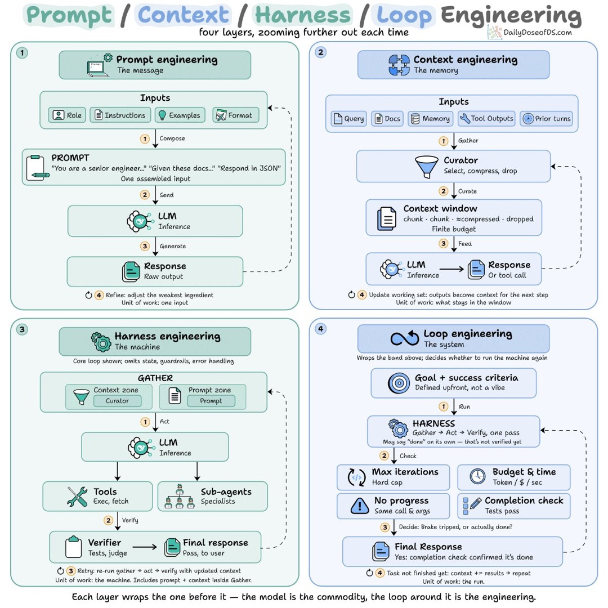
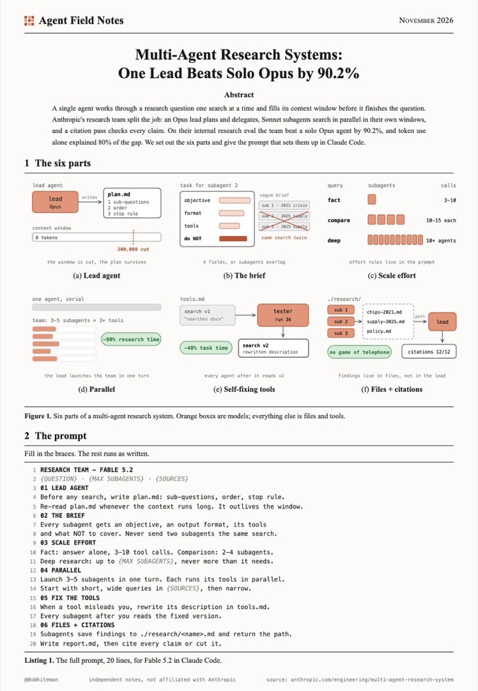

本期速览
02 深入理解AI Agent发布3.0
03 JEV harness PDF快300倍
04 Agent四层工程框架详解
05 Eleven Turbo首语音150ms
06 Anthropic多Agent提升90%
01｜Antigravity共享黑板用JSON
来源（X） · @chasen_liao · 2026-11-22 16:48
我原以为 Antigravity 的 /swarm 背后得有一套很复杂的系统。翻完源码才发现，撑起那块共享黑板的，就两个 JSON 文件和一个 JSONL 日志
如果你也好奇，一群 Agent 怎么靠一块黑板接力干活，可以看看这篇 👇 https://x.com/i/article/2122991361402228736
02｜深入理解AI Agent发布3.0
来源（X） · @bojie_li · 2026-11-22 23:50
- 重写了各章节的大部分内容，消除了一些 AI 味，把综述式的文风改成了教学式的，更容易理解
- 新增 Jev 类决策模型在事件过滤、工具安全判断、评测 rubric、RAG 筛选、多模态信息稀疏化等方面的应用
- 新增 Meta Muse、Pine、dsh superagent 等 personal agent 的办事逻辑
- 新增 Multica、LobeHub 等办公 agent
- 新增 Anthropic 证明黎曼猜想、OpenAI 证明千禧年问题等科研 agent
- 修订语音交互部分，纳入一些最新的工作
- 重绘书中大量插图
- 新增社区翻译的蒙古语版本
- 合入社区的 30+ PR，解决 20+ issues
引用内容
Bojie Li @bojie_li
https://github.com/bojieli/ai-agent-book
全书围绕核心公式 Agent = LLM + 上下文 + 工具 展开，十章内容如下：
- 第 1 章 · Agent 基础知识：从"模型即 Agent"的新范式出发，建立 Agent = LLM + 上下文 + 工具 的核心公式，并引入 Harness 工程——模型之外的一切工程能力，才是真正的竞争力所在。
- 第 2 章 · 上下文工程：上下文决定 Agent 的能力上限。深入大模型 API 的上下文结构、KV Cache 友好设计、提示工程、动态提示词与 Agent Skills、状态栏元信息，以及上下文压缩策略。
- 第 3 章 · 用户记忆和知识库：让 Agent 跨会话记住用户、并接入外部知识。涵盖用户记忆系统、RAG 基础管道，以及超越扁平文本的知识组织与检索（结构化索引、知识图谱等）。
- 第 4 章 · 工具：工具是 Agent 的双手。讲工具分类与通用设计原则、MCP 协议与工具选择的挑战、感知/执行/协作三类工具，以及事件驱动的异步 Agent。
- 第 5 章 · Coding Agent 与代码生成：代码是"能创造新工具的工具"，是通用 Agent 的元能力。以生产级 Coding Agent 为例，展示这一最强通用工具的完整实现。
- 第 6 章 · Agent 的评估：把 Agent 的表现变成可比较的信号。从评估环境、数据集设计、指标体系，到统计显著性、可观测性、评估驱动选型，直至生产级内部评估与仿真环境。
- 第 7 章 · 模型后训练：预训练、SFT、RL 三阶段全景。何时选 SFT、何时选 RL，RLHF、算法比较、数据与环境，以及让模型学会工具调用、提升样本效率的前沿探索。
- 第 8 章 · Agent 的自我进化：不改权重也能成长。三种学习范式，从经验中学习、主动工具发现，到"从工具使用者到工具创造者"，让 Agent 从"聪明"走向"熟练"。
- 第 9 章 · 多模态与实时交互：把感知与行动从文本扩展到语音、GUI 与物理世界。语音三范式（级联/端到端全模态/全双工）、流式语音感知与合成、Computer Use 与机器人操作。
- 第 10 章 · 多 Agent 协作：群体的智能可以高于个体。多 Agent 分类框架、何时真正优于单 Agent、共享与不共享上下文的协作、失败模式，以及涌现的"Agent 社会"。
Repo: https://github.com/bojieli/ai-agent-book

03｜JEV harness PDF快300倍
来源（X） · @savvy_luvvvv · 2026-11-22 23:11
jev 创始人、instructgpt 合著者 diogo almeida 放出了一份 pdf，讲清楚怎么搭一套 jev harness
它的承诺：
> 速度最多快 300 倍
> 成本最多低 600 倍
快和省，全都来自模型外面那层 harness
用法：
> 把这份 pdf 和下面的文章一起丢给 claude code 或 codex
> 让它照着重建一遍自己的配置
花 2 个小时，你的 agent 就能跑在一套很少有团队拥有的 harness 上 ↓

引用内容
Iron Giant @irongiantXBT
中文译文
原文
04｜Agent四层工程框架详解
来源（X） · @_avichawla · 2026-11-22 18:40
中文译文
Prompt、context、harness 和 loop 工程，清晰讲解！
一个 agent 就是一个 while 循环，外面包裹着四层工程：
- Prompt 工程
- Context 工程
- Harness 工程
- Loop 工程
每一层包裹着上一层，而模型位于中间，所以它们之间并不互相竞争，而是各自向外延伸一层。
> Prompt 工程：
这定义了模型在一次调用中看到的输入，通常由角色、指令、示例和输出格式组成。
这里的技巧会因为模型看到的措辞而改变模型内部的计算和推理过程：
- Chain-of-thought 让它在回答之前分步思考
- Few-shot 示例定义格式和边界情况
- JSON schema 或 XML 标签让输出能被代码解析
- Self-consistency 采样几条推理链并取多数
> Context 工程：
这是模型在一轮对话中看到的所有内容，不仅仅是 prompt。包括查询、检索到的文档、记忆、之前的对话轮次，以及早期步骤的工具输出。
窗口是有限的，而且填得很快，所以工程工作就是对输入排序，并砍掉所有不起作用的内容。
你通过以下方式做到这一点：
- 只检索与查询相关的片段，然后重新排序
- 把关键事实避开中间位置，因为那里准确率会下降
- 总结旧轮次，驱逐过期输出，把大块内容推到文件里
> Harness 工程：
这是围绕模型的代码，它定义工具、解析调用、失败时重试，并且可以将工作路由给子 agent，让一个负责检索，另一个负责代码。
然后由一个 verifier 通过运行测试、验证 schema 等方式对结果进行评分。
Prompt 和 context 涉及的是让一次调用做对。Harness 涉及的是为了让它在一个真实系统中运行，那次调用周围必须发生的所有事情。
> Loop 工程：
在通常的设置中，你管理外层循环，也就是说，你写一个 prompt，读 agent 运行的轮次，写下下一个 prompt，重复如此，同时捕获失败。
这一层把这项工作交给了 agent 本身。它按计划或事件启动，运行多个轮次，中间没有任何 prompt。
循环本身不知道什么时候完成了。一个 agent 可以报告说它完成了并停止，但测试仍然失败。所以停止不能以 agent 的话为准，而必须是一个真实的信号，比如：
- 轮次和 token 上限来停止卡住的运行
- 无进展检测器来捕获重复调用
- 完成检查用另一个模型或确定性测试来验证目标
通过这一层，你操作的是整个运行，所以工程工作从编写每个 prompt 变成预先设定目标和停止条件，然后让它运行。
运行时间越长，下面几层的成本就越大。
当一个工具返回一个 5 万 token 的响应，而没有任何东西移除它时，模型会在每次后续调用中重新读取它。在一个二十步的循环中，一个响应变成了数十万 token。
我写了一篇完整拆解 agent 的 token 到底去了哪里，以及 harness 如何保持 context 平坦的文章，使用的是 TrueForge，一个开源的 harness，它能把一个 LLM 变成一个能工作的 agent。
GitHub repo: https://github.com/truefoundry/trueforge
（别忘了给它点星 ⭐）
它涵盖了将大型工具输出卸载到文件、用于 context 隔离的子 agent、用于多工具连接的 Code Mode，以及压缩。
它还有一个三个 harness 在同样 14 个任务上的基准测试，其中 TrueForge 用了大约 Claude Managed Agents 40% 的 token 就达到了相同的答案。
你可以在下面阅读我的完整文章。
原文
Prompt, context, harness & loop engineering, clearly explained!
An agent is a while loop with four layers of engineering wrapped around it:
- Prompt engineering
- Context engineering
- Harness engineering
- Loop engineering
Each one wraps the last, and the model sits in the middle, so none of them compete with the others. Instead, they just zoom one level further out.
> Prompt engineering:
This defines the input the model sees on one call, often composed of a role, instructions, examples, and an output format.
The techniques here alter the internal computation and reasoning the model goes through due to the wording it sees:
- Chain-of-thought makes it work in steps before answering
- Few-shot examples define the format and the edge cases
- A JSON schema or XML tags make the output parseable by code
- Self-consistency samples a few chains and takes the majority
> Context engineering:
It's everything the model sees on a turn, not just the prompt. That includes the query, retrieved docs, memory, prior turns, and tool outputs from earlier steps.
The window is finite and fills up fast, so the engineering work is to rank inputs and cut everything that isn't pulling weight.
You do this by:
- Retrieving only the chunks relevant to the query, then reranking them
- Keeping key facts out of the middle, where accuracy drops
- Summarizing old turns, evict stale outputs, push big blobs to files
> Harness engineering:
It's the code around the model that defines the tools, parses the calls, retries on failure, and can route work to sub-agents so one handles retrieval and another handles code.
A verifier then grades the result by running tests, validating a schema, etc.
Prompt and context involve getting one call right. The harness involves everything that has to happen around that call for it to run in a real system.
> Loop engineering:
In the usual setup, you manage the outer loop, i.e, you write a prompt, read the turns the agent runs, write the next prompt, and repeat, while catching failures.
This layer hands that job to the agent itself. It kicks off on a schedule or an event, and runs many turns with no prompt in between.
A loop inherently doesn't know when it's finished. An agent can report that it's done and halt while the tests still fail. So the stop can't be the agent's word, but rather it has to be a real signal, like:
- A turn and token cap to stop stuck runs
- A no-progress detector to catch repeated calls
- A completion check to verify the goal with a separate model or a deterministic test
By this layer, you're operating on the whole run, so the engineering moves from writing each prompt to setting the goal and the stop conditions up front and letting it run.
A longer run also makes the cost of the layers underneath it grow.
When a tool returns a 50K-token response and nothing removes it, the model reads it again on every later call. Over a loop of twenty steps, one response turns into hundreds of thousands of tokens.
I wrote a full breakdown of where an agent's tokens actually go and how a harness keeps context flat, using TrueForge, an open-source harness that turns an LLM into a working agent.
GitHub repo: https://github.com/truefoundry/trueforge
(don't forget to star it ⭐ )
It covers offloading large tool outputs to files, subagents for context isolation, Code Mode for multi-tool joins, and compaction.
It also has a benchmark of three harnesses on the same 14 tasks, where TrueForge reached the same answers on about 40% of the tokens Claude Managed Agents used.
You can read my full article below.

引用内容
Avi Chawla @_avichawla
中文译文
原文
05｜Eleven Turbo首语音150ms
来源（X） · @ElevenLabsDevs · 2026-10-21 01:23
中文译文
Eleven v4 Turbo 上线了。约 150ms 到首次语音，REST + 流式传输 + SDK，一个 model_id 即可在 v4 和 v4 Turbo 之间切换。
原文
Eleven v4 Turbo is live. ~150ms to first speech, REST + streaming + SDKs, one model_id to switch between v4 and v4 Turbo.
06｜Anthropic多Agent提升90%
来源（X） · @0xWhitemon · 2026-11-22 23:32
中文译文
这篇 Anthropic 多 agent 论文简直离谱
Anthropic 的研究团队让一个 Opus 负责指挥一个 Sonnet 团队，比单独的 Opus agent 高出 90.2%。而用更大的模型并不是关键的升级。
关键的升级是：一个 agent 负责规划，其余并行搜索，并且没有任何单个窗口承载整个任务。
plan → brief → scale → parallel → fix → cite
研究团队的 6 个部分：
第 1 部分 → 主导 agent
Opus 在第一次搜索之前把计划写入记忆。
超过 200,000 token 后 context 会被截断。
计划得以幸存。
第 2 部分 → 任务简报
每个子 agent 都会得到一个目标、一个输出格式、工具和一条"不要覆盖"的说明。
没有这条，2 个子 agent 跑了完全相同的搜索。
第 3 部分 → 规模化投入
一个简单的事实：1 个 agent，3-10 次工具调用。
一个对比：2-4 个子 agent。深度研究：10+ 个。
第 4 部分 → 并行
3-5 个子 agent 同时运行，每个同时发起 3+ 个工具调用。
研究时间最多减少 90%。
第 5 部分 → 自我修复工具
一个测试 agent 运行了一个坏掉的工具几十次并重写了它的描述。
之后的每个 agent 都快了 40% 完成。
第 6 部分 → 文件 + 引用
子 agent 把发现保存到文件并返回一个路径。没有传话游戏。
引用检查在报告发布之前核实每一个论断。
一个 agent 在耗尽问题之前就会耗尽 context。一个团队永远不会填满一个窗口。
我把所有 6 个部分打包成了一个 prompt。把它丢进 Claude Code，它会为你设置好研究团队。
6 个部分。1 个 prompt。+90.2%。
然后阅读下面的文章 ↓
原文
This Anthropic multi-agent paper is f*cking insane
Anthropic's research team put one Opus in charge of a team of Sonnets and beat a solo Opus agent by 90.2%. And a bigger model wasn't the upgrade.
The upgrade: one agent plans, the rest search in parallel, and no single window holds the whole job.
plan → brief → scale → parallel → fix → cite
The 6 parts of the research team:
Part 1 → lead agent
Opus writes the plan to memory before the first search.
Past 200,000 tokens the context gets cut. The plan survives.
Part 2 → the brief
Every subagent gets an objective, an output format, tools and a "do NOT cover" line.
Without it, 2 subagents ran the exact same search.
Part 3 → scale effort
A simple fact: 1 agent, 3-10 tool calls.
A comparison: 2-4 subagents. Deep research: 10+.
Part 4 → parallel
3-5 subagents at once, each firing 3+ tools at once.
Research time down up to 90%.
Part 5 → self-fixing tools
A tester agent ran a broken tool dozens of times and rewrote its description.
Every agent after it finished 40% faster.
Part 6 → files + citations
Subagents save findings to files and hand back a path. No game of telephone.
A citation pass checks every claim before the report ships.
One agent runs out of context before it runs out of question. A team never fills one window.
I packed all 6 parts into one prompt. Drop it into Claude Code and it sets the research team up for you.
6 parts. 1 prompt. +90.2%.
Then read the article below ↓

引用内容
Whitemon @0xWhitemon
中文译文
Harness、loop 和 graph 可能就是 AI 模型与真正能工作的 agent 之间缺失的那几层。
同样的模型，同样的 prompt，结果却完全不同。
在这篇文章中，我展示了如何构建这三层。https://x.com/i/article/2119423551300145152
原文
Harness, loop and graph could be the missing layers between AI models and agents that actually work.
Same model, same prompt, completely different results.
In this article, I show you how to build all three layers. https://x.com/i/article/2119423551300145152